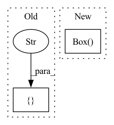

Pattern ID :26299

Before Change
diff = y_test - y_pred
diff_mean = diff.mean()
display = [
"Non-zero mean of the error distribution indicated the presents "
"of systematic error in model predictions",
go.Figure()
.add_trace(go.Box(
x=diff.values,
name="Model Prediction Error",
boxpoints="suspectedoutliers",
marker=dict(outliercolor="red"),
hoverinfo="x",
hoveron="points"))
.update_layout(
title_text="Box plot of the model prediction error",
width=800, height=500)
.add_vline(
x=diff_mean + 0.01,
line_dash="dash",
annotation_text="Mean error")
]
return CheckResult(value={"rmse": rmse, "mean_error": diff_mean}, display=display)
After Change
diff_mean = diff.mean()
fig = go.Figure()
fig.add_trace(go.Box(
x=diff,
name="Model prediction error",
boxmean=True // represent mean
)).update_layout(
title_text="Box plot of the model prediction error",
width=800, height=500)
In pattern: SUPERPATTERN
Frequency: 3
Non-data size: 2
Instances
Fragment ID: 79060506
Project Name: deepchecks/deepchecks
Commit Name: c01152285e836dd6bf8a0016b921aa0e5764c35f
Time: 2021-12-30
Author: noamzbr@gmail.com
File Name: deepchecks/checks/performance/regression_systematic_error.py
M Class Name: RegressionSystematicError
N Class Name: RegressionSystematicError
M Method Name: _regression_error_distribution(3)
N Method Name: _regression_error_distribution(3)
M Parent Class: SingleDatasetBaseCheck
N Parent Class: SingleDatasetBaseCheck
M File Name: deepchecks/checks/performance/regression_systematic_error.py
N File Name: deepchecks/checks/performance/regression_systematic_error.py
M Start Line: 54
M End Line: 72
N Start Line: 54
N End Line: 67
'>
Before Change
@property
def observation_space(self):
if self.observation_space_ is None:
self.pipes[0].send(["observation space", None])
func, self.observation_space_ = self.pipes[0].recv()
assert func == "observation space", f""{func}" istead of " \
After Change
np.array(self.observation_dict["state"]["robot"].shape) +
np.array(self.observation_dict["state"]["task"].shape)
)
self.observation_space_ = spaces.Box(-1, 1,
shape=self.observation_space)
return self.observation_space_
@property
'>
Fragment ID: 79060507
Project Name: tmdt-buw/karolos
Commit Name: 8783eb5ebd8174b9a749d88fce178214ed642b96
Time: 2020-05-13
Author: timo.thun@ima-ifu.rwth-aachen.de
File Name: environments/orchestrator.py
M Class Name: Orchestrator
N Class Name: Orchestrator
M Method Name: observation_space(1)
N Method Name: observation_space(1)
M Parent Class: object
N Parent Class: object
M File Name: environments/orchestrator.py
N File Name: environments/orchestrator.py
M Start Line: 138
M End Line: 142
N Start Line: 150
N End Line: 155
'>
Before Change
ax.axvline(x=diff_mean, linestyle="--")
ax.annotate(xy=(diff_mean + 0.01, 1.2), text="mean error")
display = ["Non-zero mean of the error distribution indicated the presents of \
systematic error in model predictions", display_box_plot]
return CheckResult(value={"rmse": rmse, "mean_error": diff_mean}, display=display)
After Change
"Non-zero mean of the error distribution indicated the presents "
"of systematic error in model predictions",
go.Figure()
.add_trace(go.Box(
x=diff.values,
name="Model Prediction Error",
boxpoints="suspectedoutliers",
marker=dict(outliercolor="red"),
hoverinfo="x",
hoveron="points"))
.update_layout(
title_text="Box plot of the model prediction error",
width=800, height=500)
'>
Fragment ID: 79060505
Project Name: deepchecks/deepchecks
Commit Name: 625ac3dc82b15e78d38336e866b33facba0bd9ed
Time: 2021-12-23
Author: 71635444+yromanyshyn@users.noreply.github.com
File Name: deepchecks/checks/performance/regression_systematic_error.py
M Class Name: RegressionSystematicError
N Class Name: RegressionSystematicError
M Method Name: _regression_error_distribution(3)
N Method Name: _regression_error_distribution(3)
M Parent Class: SingleDatasetBaseCheck
N Parent Class: SingleDatasetBaseCheck
M File Name: deepchecks/checks/performance/regression_systematic_error.py
N File Name: deepchecks/checks/performance/regression_systematic_error.py
M Start Line: 62
M End Line: 63
N Start Line: 54
N End Line: 72